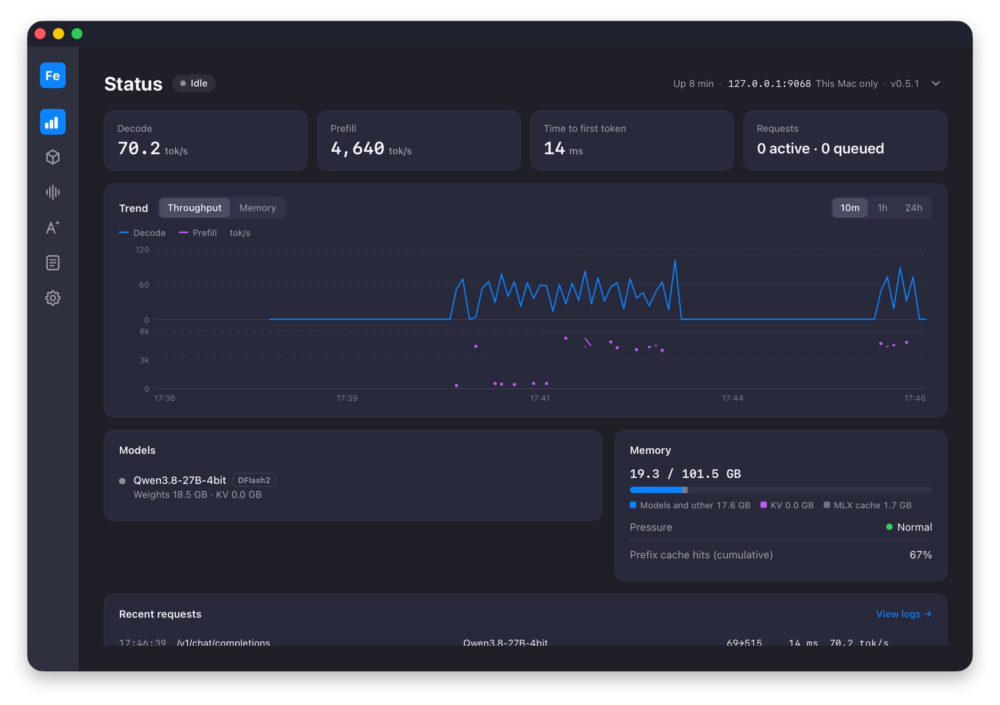
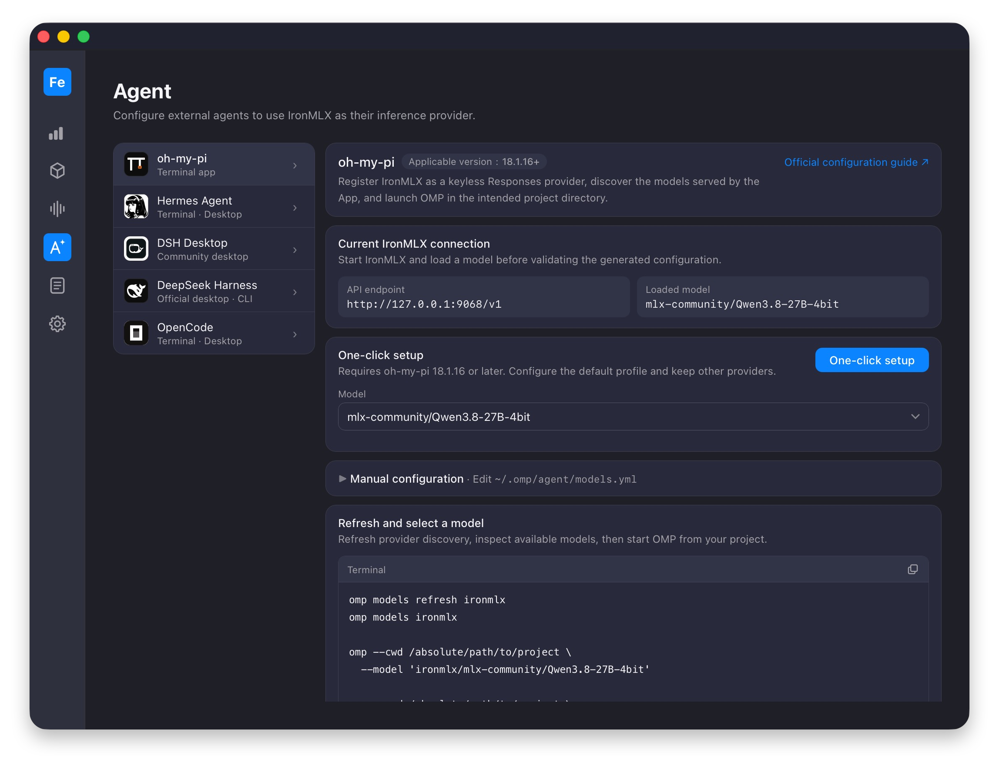

一键配置 Agent
在 App 中为 OpenCode、Hermes Agent、oh-my-pi 和 DeepSeek Harness 完成配置，也可接入任何兼容 OpenAI 或 Anthropic 的客户端。
__RELEASE_BADGE_ZH__
APPLE SILICON 本地推理
内置本地推理服务的 macOS App。在 Mac 上运行开源模型，通过兼容 OpenAI 与 Anthropic 的接口服务你的 Agents。
__RC_DOWNLOAD_ZH__


在 App 中为 OpenCode、Hermes Agent、oh-my-pi 和 DeepSeek Harness 完成配置，也可接入任何兼容 OpenAI 或 Anthropic 的客户端。
文本与视觉、语音合成与识别、图片生成、向量和决策模型，由同一个服务地址提供。
DFlash2 与 MTP 加速、连续批处理和前缀缓存，针对 Apple Silicon 调优。
AGENT 集成
选择 Agent 和已加载的模型，由 App 写好配置。每份指南也包含手动配置方法。


上手演示
从菜单栏打开 Dashboard，加载模型，发送请求，再到状态页查看运行情况。
开放接口
支持 Chat Completions、Responses 与 Anthropic Messages，包括流式响应、工具调用和结构化输出。
# 列出这台 Mac 上的模型 curl http://127.0.0.1:9068/v1/models # 发送一次对话请求 curl http://127.0.0.1:9068/v1/chat/completions \ -H 'Content-Type: application/json' \ -d '{"model": "your-model-id", "messages": [{"role": "user", "content": "你好"}]}'
当前支持
查看支持的模型架构，以及 Mac 的运行要求。